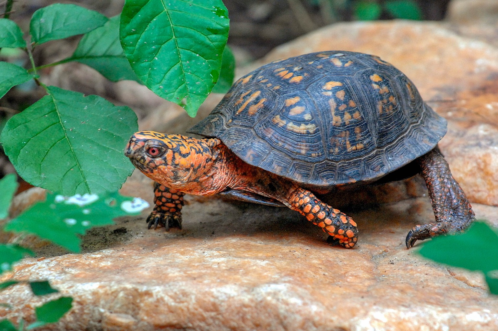

Czy warto hodować więcej niż jednego żółwia wodnego?

Dla początkujących hodowców zaleca się trzymanie jednego żółwia wodnego, aby łatwiej było kontrolować warunki w akwarium oraz monitorować jego zdrowie.
Żółwie bywają terytorialne, a niektóre gatunki mogą wykazywać agresję wobec innych osobników.
Jeśli jednak zdecydujesz się na hodowlę więcej niż jednego żółwia, upewnij się, że akwarium jest odpowiednio duże, aby każdy osobnik miał swoją przestrzeń do pływania i wygrzewania.